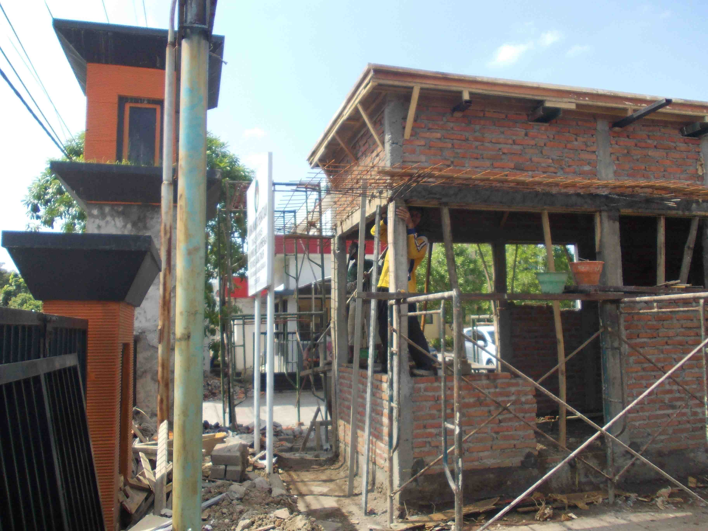
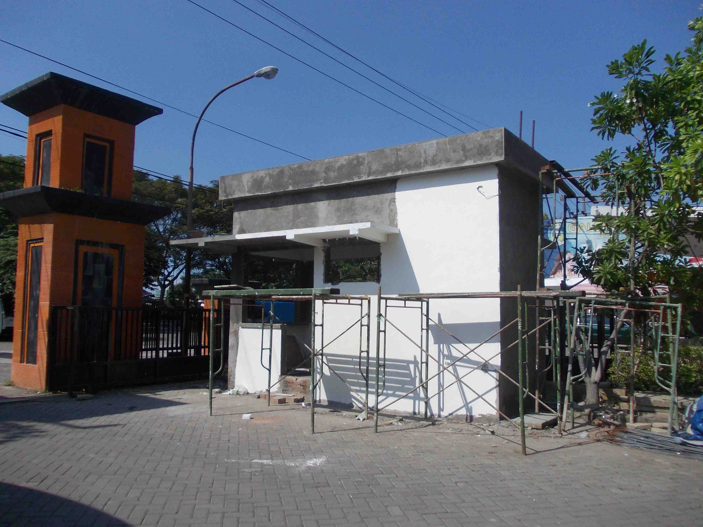
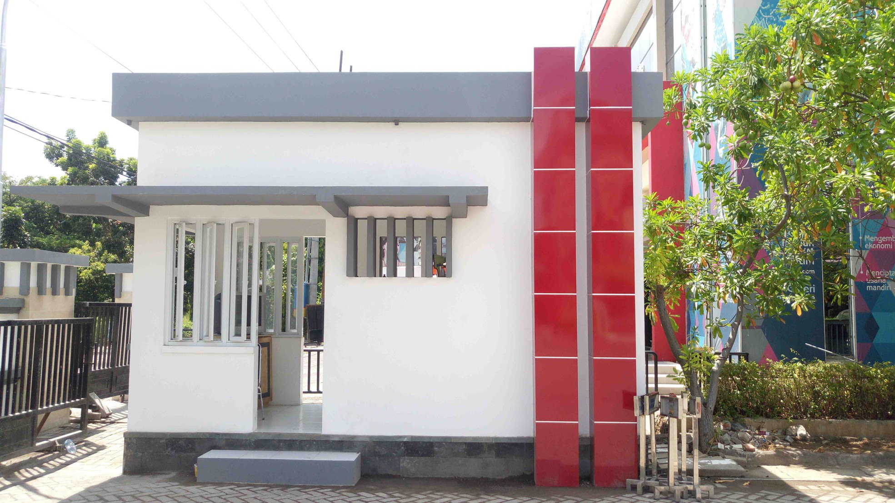
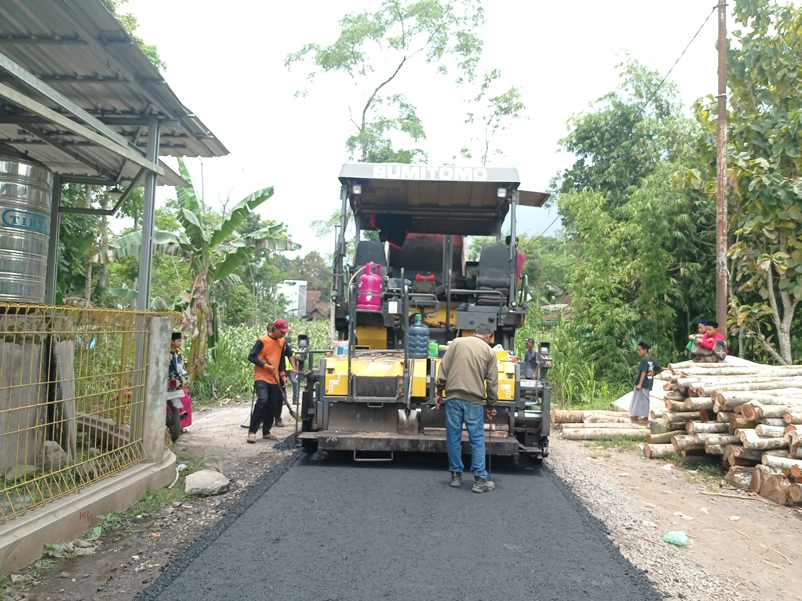
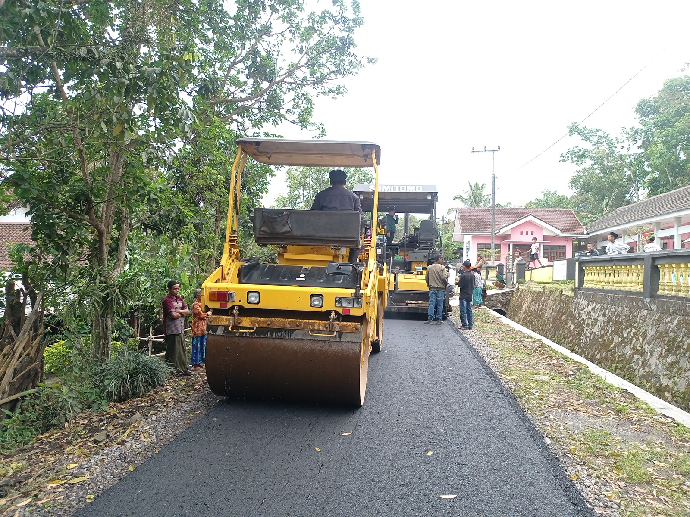
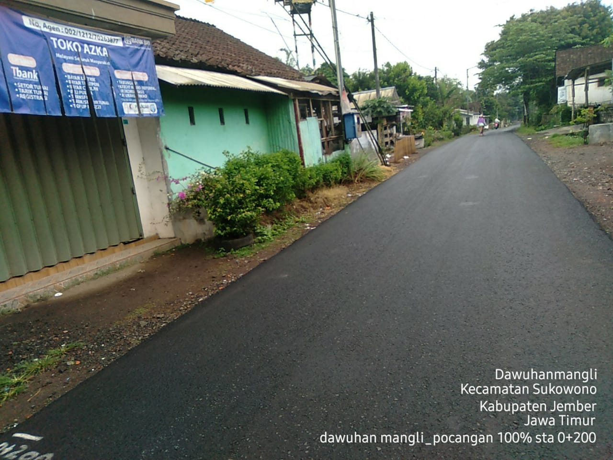
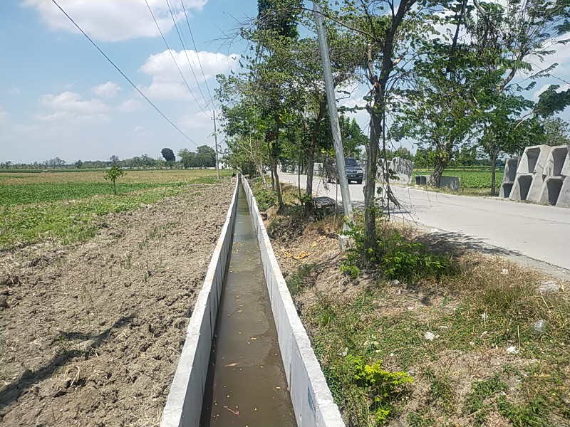
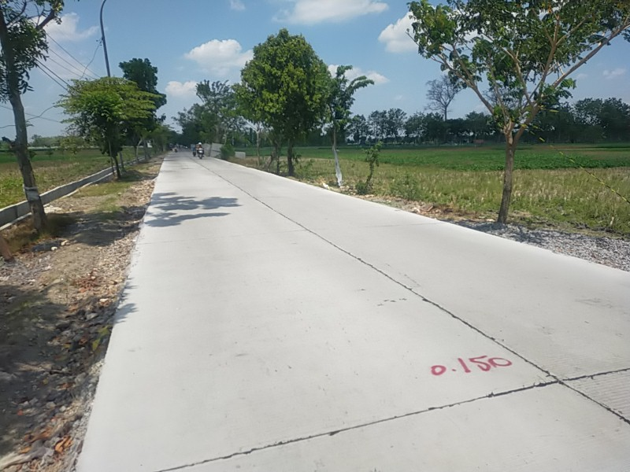
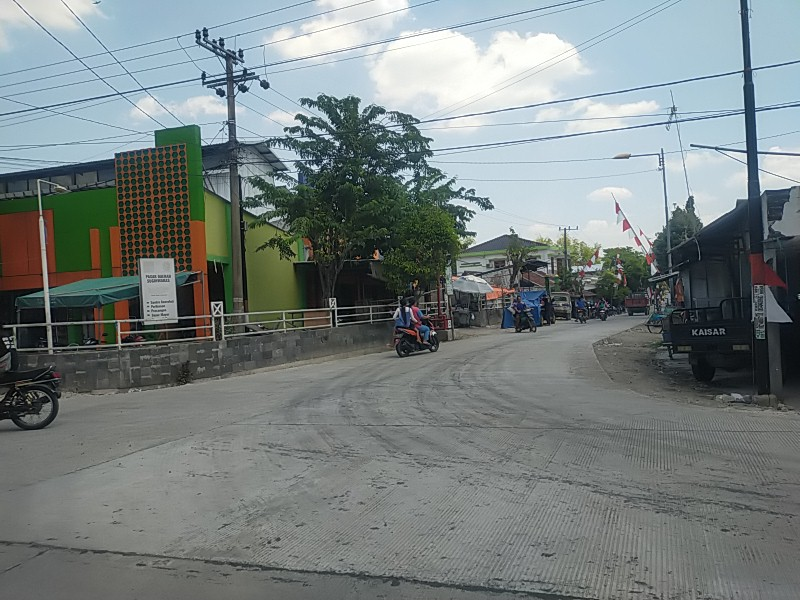

Selamat Datang di web pribadi saya
Website ini saya buat untuk memperkenalkan diri dengan kemampuan dan pengalaman yang saya miliki. Saat ini saya bekerja pada sebuah perusahaan yang bergerak dalam bidang konsultansi untuk pekerjaan konstruksi.









Email: sugiartoefendisby@gmail.com
Instagram: sugi.efendi